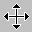

Popis obrazovky
- Pozadie
- pozadie je ako papier na pracovnom stole, má len estetickú úlohu.
Pozadie môže byť jednofarebné, Veľké obrázky však oberajú o systémové zdroje.
- Ikony
- Na ploche možno nájsť ikony nasledovných typov:
- systémové - sú na ploche hneď po inštalácii a obyčajne nie je dôvod na ich odstránenie. Napr. "Tento počítač", "Kôš"
- aplikácie - spustitelné programy, nemali by byť na ploche. Ak chceme spúšťať aplikáciu z plochy, vytvoríme na ploche
zástupcu.
- dokumenty - poznáme podľa toho, že majú zahnutý pravý horný rožok. Ide o dátové súbory aplikácii a podobne ako aplikácie
by nemali ležať na ploche. Na dokumenty je určený adresár "Dokumenty", ale môže to byť riešenie pre zábudlivých aby
mohli po zapnutí počítača hneď pokračovať v rozrobenej práci z minulého dňa.
- zástupcovia - niekedy tiež nazývané linky alebo odkazy. Poznáme ich podľa zahnutej šipky vľavo dole. Zástupca môže
byť vytvorený ku aplikáciám, dokumentom i priečinkom (adresárom)
- Povinné ikony
- Väčšina ikon na ploche je volitelná - ak ich nepotrebujeme môžeme ich odstrániť, no existujú ikony, ktoré sú povinné
a ktoré by sme odstraňovať nemali.
- Tento počítač - je to cesta ako sa dostať ku obsahu diskových, disketových a CD jednotiek.
- Tento počítač - Okolné počítače - toto je cesta ku miestam v sieti (diskom, disketám, tlačiarňam)
- Kôš - miesto, kde sú vymazané súbory. Tieto súbory možno obnoviť alebo definitívne vymazať.
- Okná
- Na ploche možu byť okná spustených aplikácií alebo dialógových okien. Len jedno okno môže byť aktívne, obyčajne ho
poznáme podľa toho, že vrchný pruh je modrej farby. Vstup s klávesnice je automaticky nasmerovaný do aktívneho okna, kde
môže byť spracovaný. Kliknutím na neaktívne okno sa toto stane aktívne.
- Hlavný panel
- Obyčajne šedý pruh umiestnený naspodu obrazovky, ale je premiestniteľný aj na iný kraj obrazovky.
Stavba hlavného panelu:
- Tlačítko "Štart"
- "Ľahké spustenie" -panel nástrojov, kde môžeme umiestniť malú skupinu aplikácií, kde najzaujímavejšia je ikona "Zobraz plochu"
- Minimalizované okná bežiacich aplikácií
- Ikony rezidentných aplikácií. Najznámejšie sú:
- plánovač úloh
- prepínač klávesnice
- prepínač grafického režimu
- antivírový rezident
- hodiny
Hlavný panel
- Hlavný panel
- Hlavný panel je lišta obyčajne naspodu obrazovky s jedným tlačítkom "Štart". Okrem tlačítka Štart je na hlavnom paneli oblasť
pre ikony minimalizovných aplikácií a vpravo býva oblasť spustených rezidentných programov (plánovač úloh, obsluha klávesnice,
obsluha rozlíšenia obrazovky, antivírový program a možno sem umiestniť aj hodiny)
- Vlastnosti
- Vlastnosti hlavného panelu možno nastaviť cez tlačítko "Štart" voľbu "Nastavenie" -> "Hlavný panel", alebo kliknutím
pravého tlačítka na myši na hlavný panel.
- Vždy navrchu - Zabezpečí, že hlavný panel bude vždy navrch a nedá sa zakryť oknom
- Automaticky schovávať - pri odchode z hlavného panela sa hlavný panel zúži na úzky pásik
- Malé ikony v ponuke Štart - Zmenší ponuku štart
- Zobrazovať hodiny - vpravo na hlavnom paneli možno zobrazovať reálny čas
- Premiestňovanie
- Hlavný panel možno ťahaním zväčšovať (čo veľký prínos nie je) a tiež ho ťahaním možno presunúť na iný okraj obrazovky.
Popis okien
Poznáme dva druhy okien, ktoré sa líšia svojou funkciou i vzhľadom.
- dialógové
- Pomocou dialógového okna možno nastavovať vlastnosti. Dialógové okno si môže zavolať systém
na nastavenie vlastností systému ako napr. grafické rozlíšenie, nastavenie hlasitosti a pod.
a tiež si ho môže zavolať aplikácia na nastavenie nejakých parametrov, voľbu tlačiarne, písma a pod..
- Vzhľad
- Dialógové okno ľahko poznáme podľa titulnej lišty-pruhu, na ktorom vpravo sú len dve
tlačítka a to
 , ktorým
možno zavolať help a tlačítko ,
ktorým možno okno zavrieť.
Oproti aplikačným oknám dialógové má
, ktorým
možno zavolať help a tlačítko ,
ktorým možno okno zavrieť.
Oproti aplikačným oknám dialógové má
- - inú titulnú lištu (iné tlačítka na nej)
- - nedokáže meniť svoju veľkosť
- - nemožno ho minimalizovať
- - neobsahuje menu
- Obsah
- dialógové okno okno môže obsahovať veľké množstvo rôznych objektov a tú sú aspoň najčastejšie sa vyskytujúce:
- záložky-karty ... každá karta má viditelné uško cez ktoré sa môže zaktívniť a dostať
sa v zozname kariet navrch.
- zoznamy ... ohraničená (biela) oblasť s riadkami. Používa sa na výber 1 z N pri
menšom počte ponúkaných možností
- rozbaľujúci zoznam ... zobrazený ako jeden riadok s
s malou šipkou vpravo a s vysvetľujúcim textok nad riadkom. Výhoda oproti zoznamu je menšia
obsadená plocha v okne.
- prepínače - radiobutton ... na rýchlu voľbu 1 z N možností. Len jedna voľba môže byť aktívna.
- zaškrtávacie políčka - checkbutton ... aktivovanie/deaktivovanie nejakej vlastnosti
- tlačítka - buttons ... s nimi možno vyvolať ľubovolnú akciu. Väčšina dialógových okien
má minimálne tlačítka OK, STORNO, POUŽÍT.
- posuvný bežec ... používa sa na volbu číselnej hodnoty (napr. hlasitosť)
- Up-Down ... šipky na zväčšovanie/zmenšovanie čísla o 1
- vstupné riadky ... napr. pri volbe súboru
- obrázkové prvky ... len dotvárací efekt (napr. obrázok monitora)
- aplikačné okno
- Titulná lišta
- Býva na ňom názov aplikácie, celé okno sa dá zaň uchopiť a posúvať po ploche, ak naň 2-krát klikneme
možno okno maximalizovať/nastaviť implicitnú veľkosť. Vpravo sú na lište 3 tlačítka
"minimalizácia", "maximalizácia/imlicitná velkost","zavretie".
- Hlavné menu
- Väčšina aplikačných okien má roletové menu, pomocou ktorého spúšťame požadované akcie.
- Panel nástrojov
- Pre často sa vyskytujúce operácie býva k dispozícii panel s malými ikonami, za každou ikonou
je skrytá určitá akcia akcia ktorá sa aktivuje kliknutím na ikonu. Typické sú ikony na
otvorenie súboru, zápis, kopírovanie do schránky a pod.
- Stavový riadok
- Tiež väčšina okien má naspodu okna stavový riadok, kde je možné vypisovať aká akcia sa
sa práve robí, stav kláves (prepis<->vkladanie), poloha kurzora (číslo riadku, strany).
Tiež tu môže byť aktuálna nápoveda.
- Jedno resp. viac podriadených okien.
- Tieto okná sú podriadené, čo znamená, že nemôžu vybehnúť z nadriadeného okna aplikácie von.
(napr. ak vo worde otvorím viac súborov, tak hýbať s oknom súboru možno len v rámci wordu.
- Posuvné pruhy
- zvislý a vodorovný. Ak podriadené okno svojou veľkosťou prevyšuje priestor určený aplikačným
oknom ku oknu pribudnú posuvné pruhy pomocou ktorých možno podokno rolovať. Podobne sa pruhy
môžu ukázať aj pri hlavnom okne.
- Okraje okna
- Aplikačné okno býva orámované dvojitým rámikom, ktorý je "chytatelný", jeho uchopením
možno meniť veľkosť aplikačného okna.
- Práce s myšou
- Myš je najviac využívaný nástroj pre prácu s win, a preto je dobré vedieť čo ktorý myší kurzor
signalizuje
 | normálny výber
|  | zaneprázdnený
|
 | presný výber
|  | pomoc
|
|  | presun
| | sem sa nedá položiť
|
| zmena veľkosti
| | čakaj
|